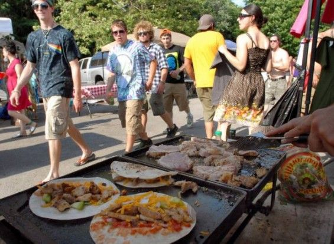

Tampa Bay's premier grilled cheese outfitters!
After following the Grateful Dead on tour for 20 years. We just missed much of the culture and experiences of being on the road. So we opened Grateful Cheese. Here you can enjoy the same quality grilled cheese you would enjoy in the parking lot of any Dead show. And for the 10 times the price! You're Welcome!
Our first ever location. This is where we served our first award winning grilled cheese. Definitely a bucket list spot if you're ever in St Pete
We missed being on the road so much we're going back! This summer we will finally have ouy food truck fully equipped and ready to follow Dead & Co on tour!
This world famous event is just around the corner! Details to come. Tentative date is May the 4th! Contact Dave for more info!
Jerry was fundamental in the creation of this restaurant. He wasn't involved with the restaurant. However, had he not been a found of the Grateful Dead the stars would never have aligned for us to provide the Tampa area with the headiest grilled cheese sandwiches.